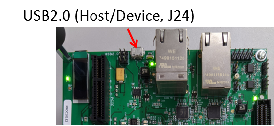

Introduction
- This examples demonstrates the use of TinyUSB DFU DEV Class driver. Its implements all the necessary callbacks that are required by TinyUSB DFU DEV class driver.
- When user issues DFU download command then the application receives the data in a static buffer via USB DFU. Once the manifest state is completed the application sends the received data back to UART0.
- When user issues DFU Upload command it sends the **"Hello world from AM64x-AM243x DFU! - Partition 0"** string back to the HOST PC.
- refer USB2.0 DFU specs to konw more about USB 2.0 DFU class.
- Note
- The max buffer size is 4KB thus, as far as this example is concerned user can send at max 4KB of data.
Supported Combinations
| Parameter | Value |
| CPU + OS | r5fss0-0_nortos |
| Toolchain | ti-arm-clang |
| Board | am64x-evm |
| Example folder | examples/usb/device/dfu |
Steps to Run the Example
Build the example
- When using CCS projects to build, import the CCS project for the required combination and build it using the CCS project menu (see Using SDK with CCS Projects).
- When using makefiles to build, note the required combination and build using make command (see Using SDK with Makefiles)
HW Setup
- To test the application, one can use a Windows/Linux PC as a USB host
- Connect the J24 on AM64x/AM243x EVM to the USB host

USB 2.0 Host/Device Connector
Run the example
AM64x-AM243x DFU Device detected.
DFU Download
- Open COM port in windows and /dev/ttyUSBx in linux which opens console for UART0.
Once the DFU device is enumerated run the following command.
Windows
dfu-util -a 0 -i 0 -D test_data.txt
Linux
sudo dfu-util -a 0 -i 0 -D test_data.txt
- The test_data.txt file contains a string data that is to be transfered.
- Once the DFU transfer is completed following will be displayed on the terminal.
DFU Download command successful
- Open UART0 serial port to observe the content of
test_data.txt file displayed on same serial port.
Content of received file displayed on serial port.
DFU Upload
Run the following command to read the data from DFU device.
Windows
dfu-util -a 0 -i 0 -U upload_data.txt
Linux
sudo dfu-util -a 0 -i 0 -U upload_data.txt
- Once the DFU Upload transaction is successful , open
upload_data.txt file to see the contents
Data sent by DFU device to DFU host.
See Also
USB
 1.8.20
1.8.20